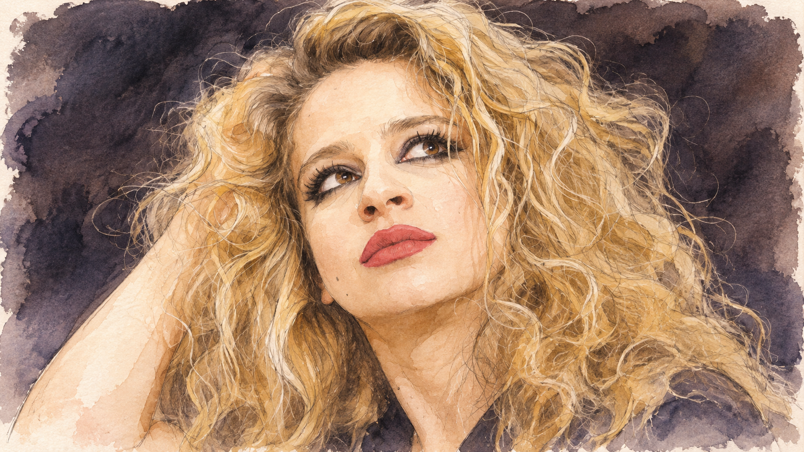
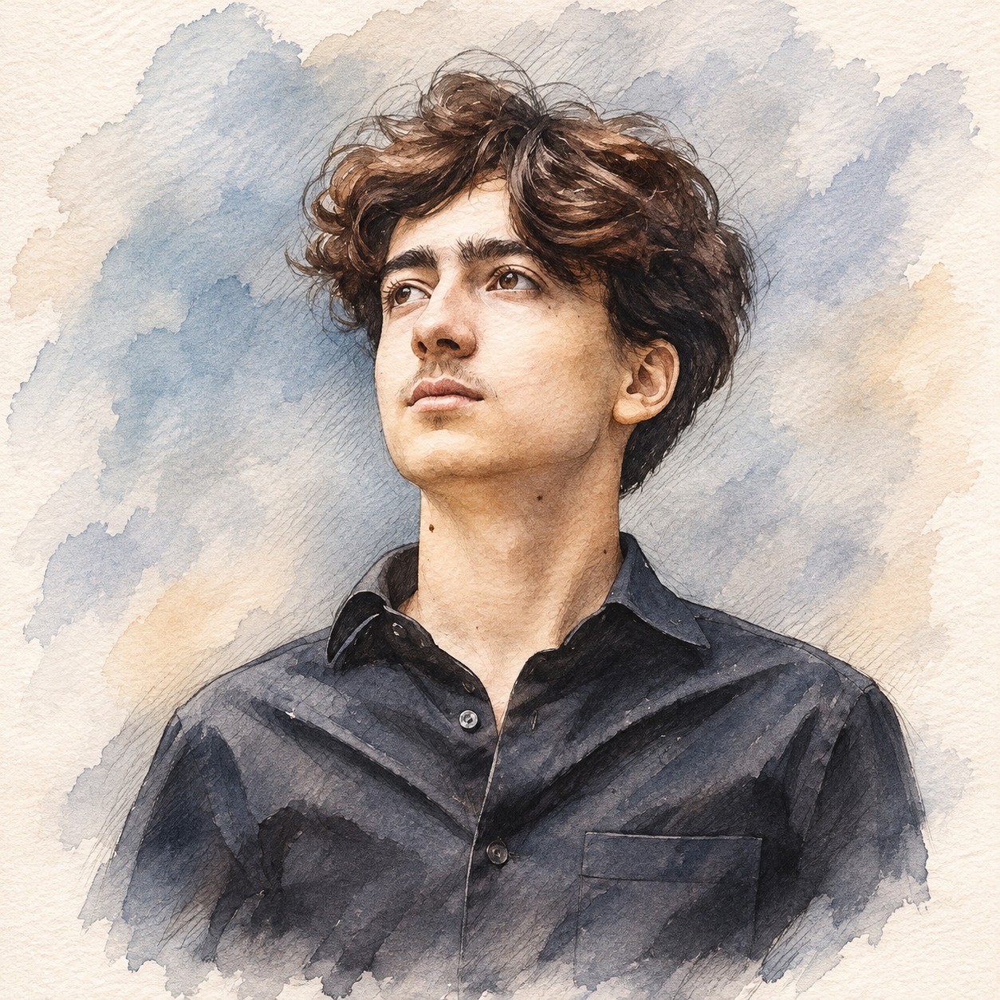
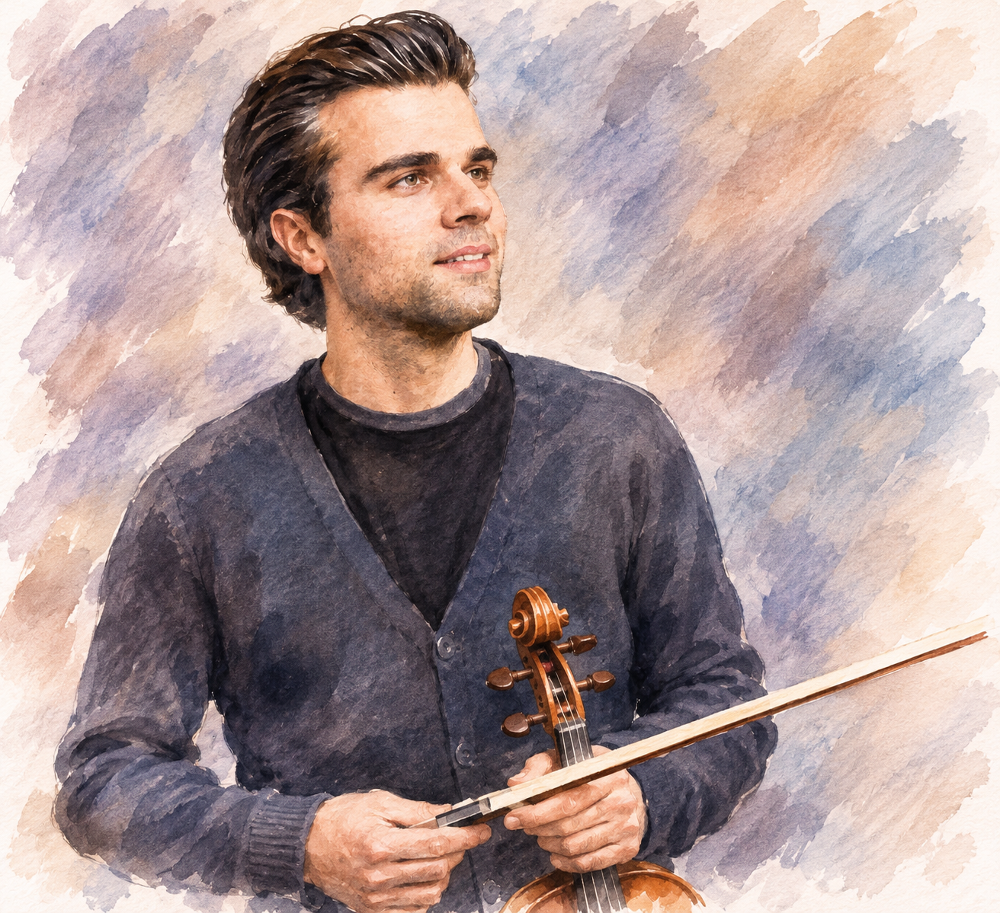
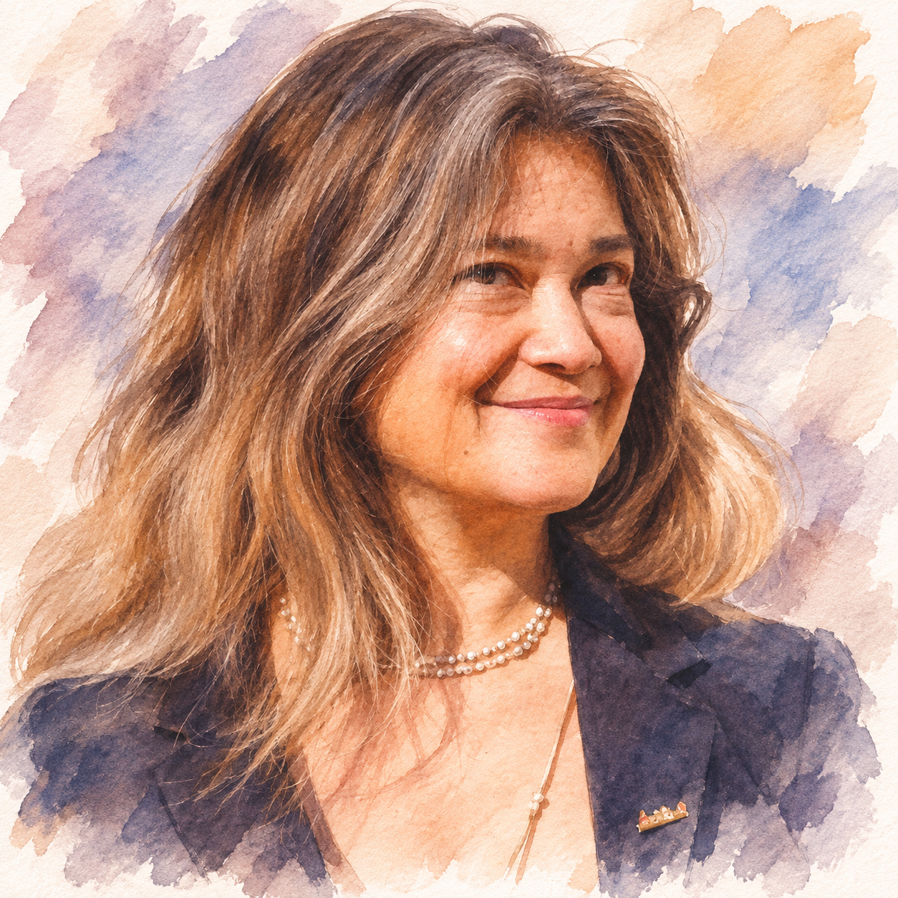
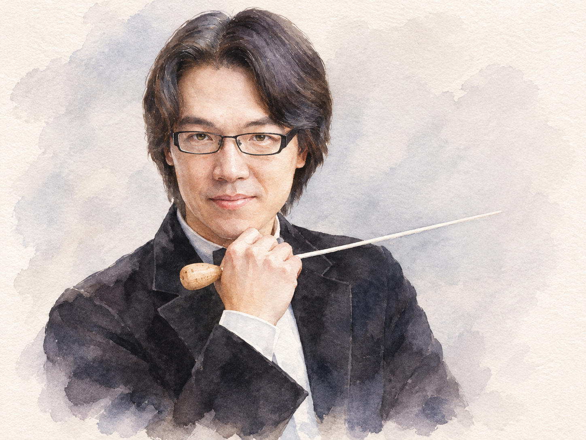
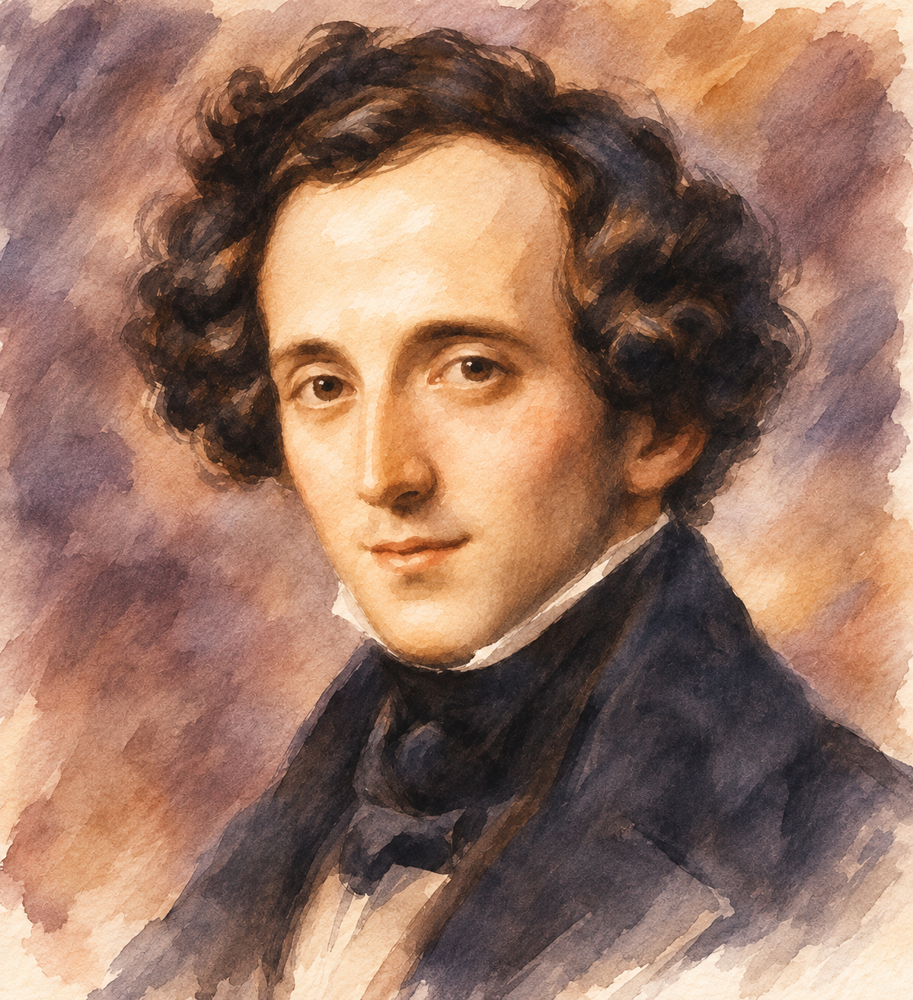
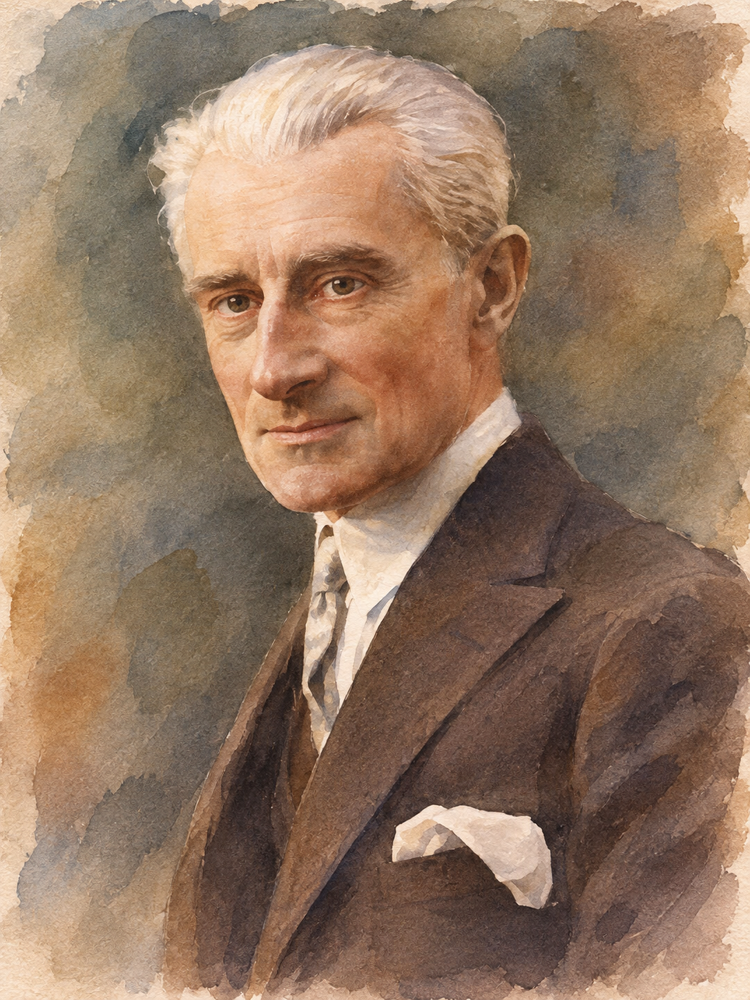
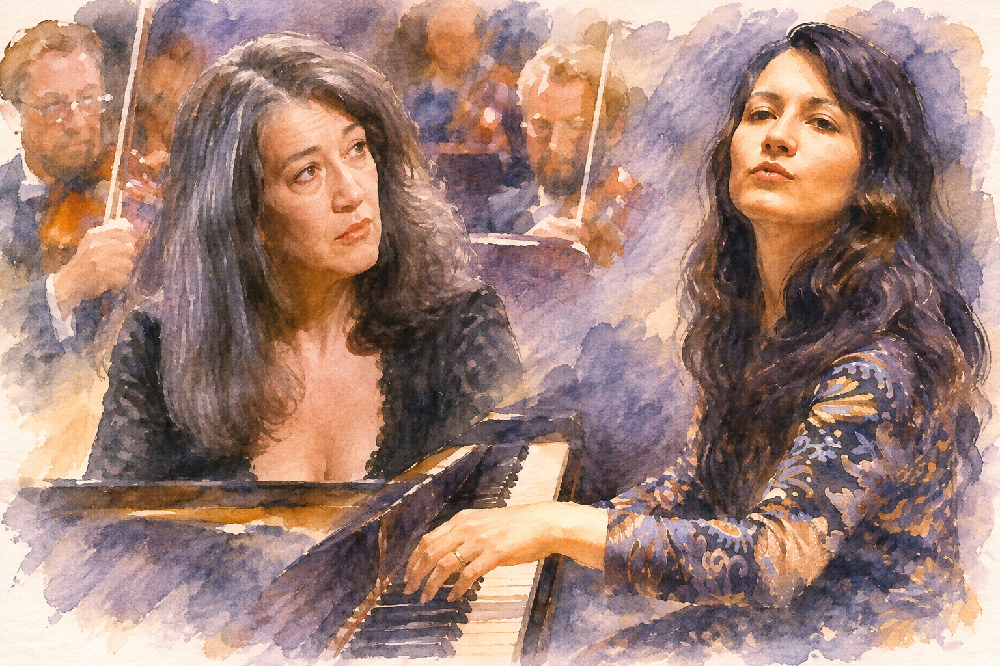

三個世紀，三種協奏曲的關係
節目從十四歲孟德爾頌 1823 年的少年作品出發，回到莫札特 1782 年初抵維也納時的鋼琴協奏曲，最後抵達拉威爾 1931 年完成、帶有爵士節奏與精密配器的協奏曲。三首作品都讓獨奏者站在樂團前方，卻各自回答不同問題：獨奏者是在競爭、交談，還是共同塑造一個聲音？
| 曲目 | 本場演出者 | 可先抓住的線索 |
|---|---|---|
| 孟德爾頌 D 小調雙重協奏曲，MWV O 4 | Yossif Ivanov 小提琴、Theodosia Ntokou 鋼琴、Lyda Chen Argerich 指揮 | 兩位獨奏者交換主導權；弦樂團既是背景，也參與發展。 |
| 莫札特 A 大調第十二號鋼琴協奏曲，K.414 | David Chen Sverdlov 鋼琴、Lyda Chen Argerich 指揮 | 歌唱性的樂句、細緻觸鍵與鋼琴和樂團的室內樂式對答。 |
| 拉威爾 G 大調鋼琴協奏曲，M.83 | Martha Argerich 鋼琴、廖國敏指揮 | 爵士感的節奏、木管與打擊樂的色彩，及極快段落裡的清晰度。 |
曲目與演出安排以主辦單位公告為準；下列影片均為延伸聆聽，不是本場現場錄影。OPENTIX：臺北場官方節目 ↗
六位音樂家與一個樂團
本場不只是明星獨奏會。阿格麗希的女兒 Lyda Chen Argerich 擔任音樂總監，外孫 David Chen Sverdlov 則演出莫札特；舞臺上也有她長年支持與合作的音樂夥伴。這層關係使「協奏」不只指獨奏與樂團，也包括跨世代的合作。

瑪莎・阿格麗希 Martha Argerich｜鋼琴
1941 年生於阿根廷布宜諾斯艾利斯，1965 年獲華沙蕭邦國際鋼琴大賽首獎。她的演奏以節奏感、鮮明音色與充滿生命力的速度變化聞名，也能在慢板中維持細膩歌唱性。近年她特別投入室內樂與和年輕音樂家的合作。本場演出她長年重要曲目之一：拉威爾 G 大調鋼琴協奏曲。
| 音樂家 | 本場角色 | 背景與可留意之處 |
|---|---|---|
| Theodosia Ntokou | 孟德爾頌的鋼琴 | 希臘鋼琴家；2009 年與阿格麗希相識，後獲其指導並展開長期合作，兩人曾錄製貝多芬《田園》四手聯彈版。 |
| Yossif Ivanov | 孟德爾頌的小提琴 | 比利時小提琴家；十六歲獲蒙特婁國際音樂大賽首獎，並任教於布魯塞爾皇家音樂院。聽他如何把長線條交給鋼琴接續。 |
| David Chen Sverdlov | 莫札特 K.414 的鋼琴 | 2008 年生；母親為 Lyda Chen Argerich，阿格麗希為外祖母。2016 年曾在盧加諾與外祖母四手聯彈。 |
| Lyda Chen Argerich | 音樂總監；孟德爾頌、莫札特指揮 | 先學小提琴，後轉中提琴，長年參與室內樂；2019 年創立 Arch Music Academy。她的弦樂背景也值得用來聽獨奏與樂團的平衡。 |
| 廖國敏 Lio Kuokman | 拉威爾指揮 | 出生於澳門，曾任費城管弦樂團助理指揮、香港管弦樂團駐團指揮。可注意他與阿格麗希如何安排節奏與管弦樂色彩。 |
| 長榮交響樂團 | 全場樂團 | 2002 年由張榮發基金會創立；從孟德爾頌弦樂對話、莫札特透明均衡，到拉威爾的木管、銅管與打擊色彩，需切換三種語言。 |





孟德爾頌：D 小調小提琴、鋼琴與弦樂團雙重協奏曲，MWV O 4

創作於 1823 年，作曲家十四歲；長度約 35–40 分鐘。孟德爾頌成長於文化環境豐厚的家庭，家中定期舉辦私人音樂會。1823 年 5 月 25 日，這首作品在柏林家中首演：小提琴由他的老師兼朋友 Eduard Rietz 演奏，鋼琴由孟德爾頌本人擔任。少年作品已能聽見他對巴赫、莫札特和古典協奏曲傳統的理解，也帶有浪漫主義的熱情與旋律。
雙重協奏曲的重點不是把兩位獨奏者並排展示。小提琴擅長延續、歌唱性的線條；鋼琴能同時處理旋律、和聲和快速音群；弦樂團提供背景，也會參與主題發展。主導權不斷交接：有時小提琴提出主題，鋼琴回答；有時鋼琴先展開快速音型，小提琴再帶出更明顯的旋律。
Isabelle Faust、Kristian Bezuidenhout、John Eliot Gardiner：完整演出 ↗ Rainer Kussmaul、Andreas Staier：附完整樂譜版本 ↗
第一樂章 Allegro｜00:00
D 小調的開頭由弦樂建立戲劇張力，兩位獨奏者加入後展開篇幅很大的對話。樂章承襲協奏曲奏鳴曲式，卻不只是把主題依序展示：鋼琴與小提琴反覆交換材料，讓獨奏與合奏的界線變得有彈性。可留意帶有宣敘調性格的交談，以及大型炫技段落裡兩人如何互相讓出空間。
Faust、Bezuidenhout、Gardiner：第一樂章 ↗
第二樂章 Adagio｜18:57
慢板進入安靜而抒情的世界。小提琴拉出自然延續的旋律，鋼琴以和聲、琶音與短句回應；鋼琴有時也接過旋律的尾端，讓它繼續延伸。精彩不在技巧複雜，而在兩件樂器能否共享一種呼吸。
Faust、Bezuidenhout、Gardiner：第二樂章 ↗
第三樂章 Allegro molto｜27:54
最後樂章由連續節奏與速度推動。快速音群在小提琴與鋼琴之間穿梭、追逐或合力推向高潮；它不是技巧競賽，而是要在速度中仍讓主題、旋律方向與弦樂團的合作保持可辨。
莫札特：A 大調第十二號鋼琴協奏曲，K.414

1782 年寫成，作曲家二十六歲；長度約 26 分鐘。1781 年莫札特離開薩爾斯堡，開始在維也納透過演奏、教學與出版建立事業；鋼琴協奏曲成為重要形式。K.414 沒有後期大型協奏曲的濃厚戲劇性，卻在旋律、和聲、結構與句法之間取得精妙平衡。莫札特甚至設想過較小編制的演出，讓鋼琴與弦樂四重奏合作；因此這首作品的性格更接近室內樂，而非以龐大音響取勝。
鋼琴與樂團的對答清楚，獨奏部分既有歌唱旋律，也有細緻裝飾與快速音群。演奏時，樂句分段、觸鍵和力度控制決定表情；慢板裡，旋律的連貫與伴奏平衡比炫技更重要。
第一樂章 Allegro
樂團先提出明亮自然的主題，鋼琴加入後並非重複，而是以裝飾、轉調、音型和句法重新展開材料。後段華彩裡鋼琴暫時獨自成為焦點；聽見樂團開頭後，可比較同一材料到了鋼琴手中如何改變表情。
Maria João Pires：第一樂章 Allegro ↗
第二樂章 Andante
莫札特引用他所敬重的 Johann Christian Bach 歌劇序曲旋律。J.C. 巴哈是巴赫最小的兒子，長年在倫敦發展，對少年莫札特影響深遠；1782 年他去世，這段旋律常被理解為莫札特對前輩的致意。開始時音樂平靜而歌唱，隨和聲進入小調，原本優美的語氣出現沉思與不安，最後回歸平靜但已不是單純的明亮。
Maria João Pires：第二樂章 Andante ↗
第三樂章 Rondeau: Allegretto
迴旋曲主題反覆回來，中間插入不同段落，因此既熟悉又持續變化。輕巧節奏與舞蹈性帶來親切、幽默的性格。這裡的技巧不以極端速度或音量為目的，而是讓旋律流動、轉折自然發生；聽主要主題每次回歸時，鋼琴與樂團的分工有沒有改變。
拉威爾：G 大調鋼琴協奏曲，M.83

1929–1931 年創作；長度約 22–25 分鐘。拉威爾在 1928 年赴美巡迴，接觸爵士文化；他沒有直接模仿爵士，而是將感興趣的節奏、和聲和音色放入精密的管弦樂設計。作品仍保持傳統的快—慢—快三樂章架構：第一樂章明快而有節奏感，第二樂章是悠長歌唱，第三樂章極快、機智而爆發。鋼琴是獨奏主角，但木管、銅管、豎琴與打擊樂都有鮮明個性。
Martha Argerich、法國國家管弦樂團、Emmanuel Krivine：2017 巴黎完整演出 ↗
第一樂章 Allegramente｜01:11
一記清脆鞭聲揭幕，短笛接著奏出尖銳靈巧的主題，鋼琴迅速加入。爵士式切分、特殊和聲與藍調色彩穿插其間，但每個節奏和配器都經過精確安排。後段鋼琴、豎琴和木管構成與開場不同的奇幻色彩。
第二樂章 Adagio assai｜09:30
鋼琴獨白開始：右手唱出悠長旋律，左手以規律三拍伴奏。兩手彷彿在不同呼吸尺度前進，卻能自然合在一起；這需要對時間、觸鍵和聲部平衡的高度控制。拉威爾曾說，這段看似自然的旋律其實令他逐小節費盡心力。
接著樂團慢慢加入，英國管以溫暖、略帶憂鬱的音色接過主題；鋼琴則改為細碎、閃爍的音型環繞旋律。主題由鋼琴移到英國管時，並非只是換音色，也改變了音樂的空間和距離。
第三樂章 Presto｜18:46
寧靜慢板後，第三樂章以強烈節奏爆發。鋼琴奔馳，木管和銅管帶出尖銳、幽默甚至略帶怪誕的聲響；打擊樂增加近乎機械式的速度感。篇幅不長，卻要求獨奏與樂團在極快推進中保留每條聲部的清晰度。
阿格麗希的拉威爾：跨越二十七年的比較

拉威爾 G 大調鋼琴協奏曲是阿格麗希長期演出的曲目。可將 2017 年巴黎、Emmanuel Krivine 指揮的演出，與 1990 年 9 月 9 日在法蘭克福、Charles Dutoit 指揮、法國國家管弦樂團的演出並聽。兩者相隔二十七年，但差異同時也來自指揮、樂團與錄音條件，不能完全歸因為鋼琴家風格的改變。
| 樂章 | 比較時可以聽什麼 |
|---|---|
| 第一樂章 | 快速音群的觸鍵和節奏方向；精準脈動與自由表情如何共存。 |
| 第二樂章 | 旋律速度與呼吸，左手伴奏的重量，以及鋼琴和英國管的平衡。 |
| 第三樂章 | 速度不是唯一重點；節奏轉折和管弦樂對話是否仍清楚。 |
阿格麗希、Emmanuel Krivine：2017 完整演出 ↗ 阿格麗希、Charles Dutoit：1990 完整演出 ↗ 阿格麗希、Dutoit：第三樂章，Deutsche Grammophon ↗
把三首作品放在一起聽
| 孟德爾頌 | 莫札特 | 拉威爾 | |
|---|---|---|---|
| 年代與風格 | 1823，早期浪漫 | 1782，古典 | 1931，二十世紀 |
| 獨奏與關係 | 小提琴、鋼琴與弦樂團的雙重對話 | 鋼琴與較精簡樂團的平衡 | 鋼琴與管弦樂色彩的快速交換 |
| 慢板 | 兩位獨奏者的抒情交流 | 歌唱與和聲轉暗的內省 | 鋼琴長句轉交英國管 |
| 現場焦點 | 兩位獨奏者是否聽見彼此 | 樂句、觸鍵與呼吸 | 節奏、音色、爆發與清晰 |
三首協奏曲不是單純的年代對照。孟德爾頌延續古典形式，加入更豐富技巧與兩位獨奏者的對話；拉威爾融入爵士節奏、現代和聲與管弦樂色彩，仍保留快—慢—快的結構。從莫札特重視的旋律、樂句與平衡開始，可以聽見協奏曲如何在保留傳統的同時，逐步發展為不同的音樂語言。
資料來源與延伸聆聽
本文根據上傳的《阿格麗希音樂節在台灣：臺北場｜中文曲目導聆》之 main.tex 整理；演出資訊以主辦單位公告為準。